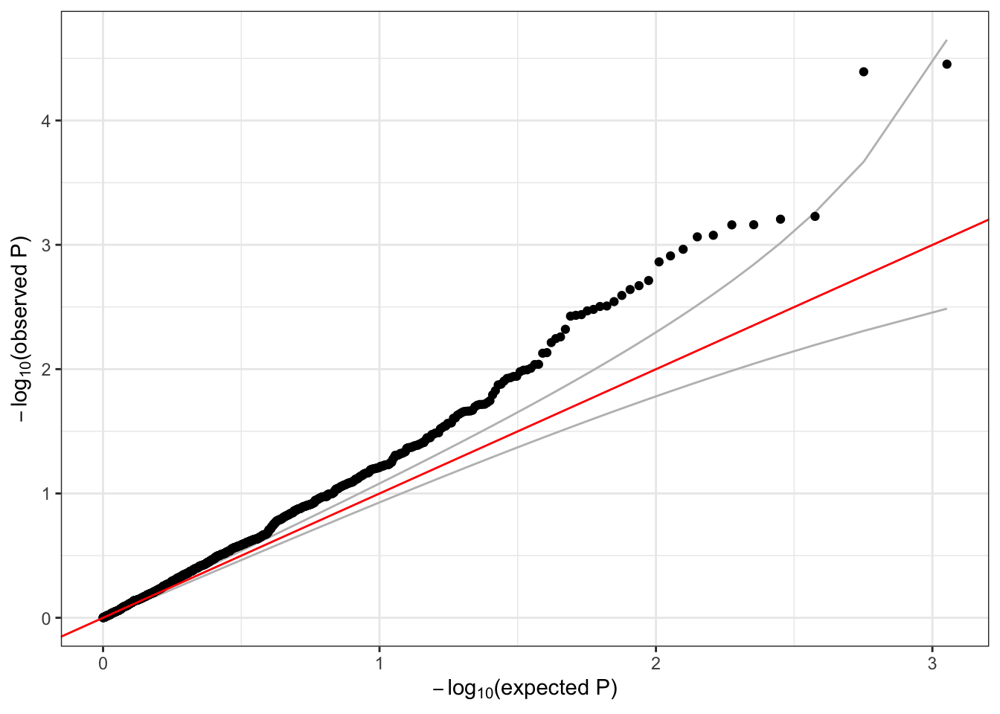
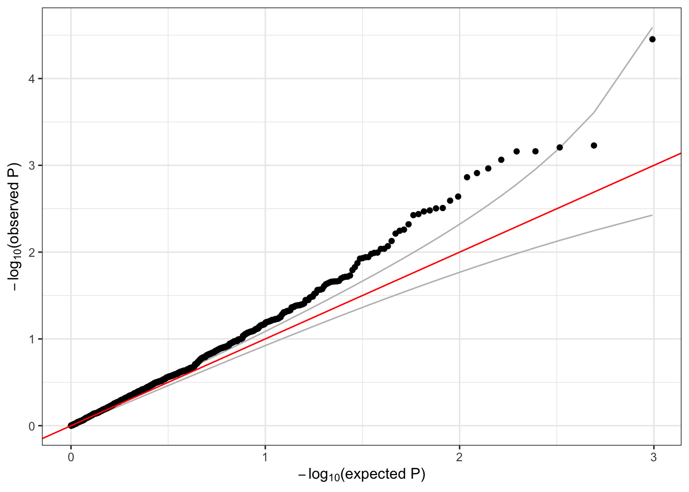

3 Association tests
These exercises introduce association testing: how to find which genetic variants are associated with a phenotype.
3.1 Null model
The first step in an association test is to fit the null model. We will need an AnnotatedDataFrame with phenotypes.
We have a sample annotation with a sample.id column matched to the GDS file, and a phenotype file with subject_id. (In this example, we use the 1000 Genomes IDs for both sample and subject ID.) For TOPMed data, it is also important to match by study, as subject IDs are not unique across studies.
# sample annotation
repo_path <- "https://github.com/smgogarten/GENESIS_workshop_2026/raw/main"
if (!dir.exists("data")) dir.create("data")
sampfile <- "data/sample_annotation.rds"
if (!file.exists(sampfile)) download.file(file.path(repo_path, sampfile), sampfile)
annot <- readRDS(sampfile)
library(Biobase)## Loading required package: BiocGenerics##
## Attaching package: 'BiocGenerics'## The following objects are masked from 'package:stats':
##
## IQR, mad, sd, var, xtabs## The following objects are masked from 'package:base':
##
## anyDuplicated, aperm, append, as.data.frame, basename, cbind,
## colnames, dirname, do.call, duplicated, eval, evalq, Filter, Find,
## get, grep, grepl, intersect, is.unsorted, lapply, Map, mapply,
## match, mget, order, paste, pmax, pmax.int, pmin, pmin.int,
## Position, rank, rbind, Reduce, rownames, sapply, setdiff, table,
## tapply, union, unique, unsplit, which.max, which.min## Welcome to Bioconductor
##
## Vignettes contain introductory material; view with
## 'browseVignettes()'. To cite Bioconductor, see
## 'citation("Biobase")', and for packages 'citation("pkgname")'.## sample.id subject.id Population Population.Description sex status
## 1 HG00096 HG00096 GBR British in England and Scotland M 0
## 2 HG00097 HG00097 GBR British in England and Scotland F 1
## 3 HG00099 HG00099 GBR British in England and Scotland F 0
## 4 HG00100 HG00100 GBR British in England and Scotland F 1
## 5 HG00101 HG00101 GBR British in England and Scotland M 0
## 6 HG00102 HG00102 GBR British in England and Scotland F 0# phenotypes by subject ID
phenfile <- "data/phenotype_annotation.rds"
if (!file.exists(phenfile)) download.file(file.path(repo_path, phenfile), phenfile)
phen <- readRDS(phenfile)
# access the data with the pData() function
head(pData(phen))## subject_id sex age height study
## 1 HG00096 M 47 165.3 study_1
## 2 HG00102 F 49 169.1 study_1
## 3 HG00112 M 46 167.9 study_1
## 4 HG00114 M 49 169.5 study_1
## 5 HG00115 M 35 161.1 study_1
## 6 HG00116 M 37 182.2 study_1## labelDescription
## subject_id subject identifier
## sex subject's sex
## age age at measurement of height
## height subject's height in cm
## study study identifier##
## Attaching package: 'dplyr'## The following object is masked from 'package:Biobase':
##
## combine## The following objects are masked from 'package:BiocGenerics':
##
## combine, intersect, setdiff, union## The following objects are masked from 'package:stats':
##
## filter, lag## The following objects are masked from 'package:base':
##
## intersect, setdiff, setequal, uniondat <- pData(annot) %>%
left_join(pData(phen), by=c("subject.id"="subject_id", "sex"="sex"))
meta <- bind_rows(varMetadata(annot), varMetadata(phen)[3:5,,drop=FALSE])
annot <- AnnotatedDataFrame(dat, meta)
saveRDS(annot, file="data/sample_phenotype_annotation.rds")We will test for an association between genotype and height, adjusting for sex, age, and study as covariates. If the sample set involves multiple distinct groups with different variances for the phenotype, we recommend allowing the model to use heterogeneous variance among groups with the parameter group.var. We saw in a previous exercise that the variance differs by study.
library(GENESIS)
nullmod <- fitNullModel(annot, outcome="height", covars=c("sex", "age", "study"),
group.var="study", verbose=FALSE)
saveRDS(nullmod, file="data/null_model.rds")We also recommend taking an inverse normal transform of the residuals and refitting the model. See the full procedure in the
pipeline documentation.
3.2 Single-variant tests
Now that we have a null model adjusting height for covariates, we can run an association test to look for genetic effects on height.
Single-variant tests are the same as in GWAS. We use the assocTestSingle function in GENESIS. First, we have to create a SeqVarData object including both the GDS file and the sample annotation containing phenotypes. We then create a SeqVarBlockIterator object to iterate over blocks of variants.
## Loading required package: SeqArray## Loading required package: gdsfmtgdsfile <- "data/1KG_phase3_subset_chr1.gds"
if (!file.exists(gdsfile)) download.file(file.path(repo_path, gdsfile), gdsfile)
gdsfmt::showfile.gds(closeall=TRUE) # make sure file is not already open
gds <- seqOpen(gdsfile)
seqData <- SeqVarData(gds, sampleData=annot)
iterator <- SeqVarBlockIterator(seqData, verbose=FALSE)
assoc <- assocTestSingle(iterator, nullmod)## # of selected samples: 1,126## Using 6 CPU cores## variant.id chr pos allele.index n.obs freq MAC Score
## 1 1 1 970546 1 1126 0.0039964476 9 -0.1191236
## 2 2 1 985900 1 1126 0.0492895204 111 -1.6707553
## 3 3 1 1025045 1 1126 0.0004440497 1 -0.2795838
## 4 4 1 1265550 1 1126 0.0008880995 2 -0.1105487
## 5 5 1 1472676 1 1126 0.0071047957 16 0.3630992
## 6 6 1 1735725 1 1126 0.0022202487 5 -0.1300405
## Score.SE Score.Stat Score.pval Est Est.SE PVE
## 1 0.2577712 -0.4621292 0.643988693 -1.792788 3.879410 0.0001905115
## 2 0.8841849 -1.8895996 0.058811535 -2.137109 1.130985 0.0031851797
## 3 0.1007173 -2.7759261 0.005504472 -27.561563 9.928781 0.0068740102
## 4 0.1085480 -1.0184319 0.308472744 -9.382319 9.212515 0.0009252485
## 5 0.3456555 1.0504657 0.293504065 3.039054 2.893054 0.0009843694
## 6 0.1973175 -0.6590420 0.509868790 -3.340007 5.067973 0.0003874544We make a QQ plot to examine the results.
library(ggplot2)
qqPlot <- function(pval) {
pval <- pval[!is.na(pval)]
n <- length(pval)
x <- 1:n
dat <- data.frame(obs=sort(pval),
exp=x/n,
upper=qbeta(0.025, x, rev(x)),
lower=qbeta(0.975, x, rev(x)))
ggplot(dat, aes(-log10(exp), -log10(obs))) +
geom_line(aes(-log10(exp), -log10(upper)), color="gray") +
geom_line(aes(-log10(exp), -log10(lower)), color="gray") +
geom_point() +
geom_abline(intercept=0, slope=1, color="red") +
xlab(expression(paste(-log[10], "(expected P)"))) +
ylab(expression(paste(-log[10], "(observed P)"))) +
theme_bw()
}
qqPlot(assoc$Score.pval)
3.3 Exercises
Logistic regression:
fitNullModelcan use a binary phenotype as the outcome variable by specifying the argumentfamily=binomial. Use thestatuscolumn in the sample annotation to fit a null model for simulated case/control status, withsexandPopulationas covariates. Then run a single-variant test using this model.Inverse normal transform: use the function
nullModelInvNormto perform an inverse normal transform on theheightvariable. Compare these residuals with the residuals from the original null model.
3.4 Sliding window tests
For rare variants, we can do burden tests or SKAT using the GENESIS function assocTestAggregate. We restrict the test to variants with alternate allele frequency < 0.1. (For real data, this threshold would be lower.) We use a flat weighting scheme. We define a sliding window across the genome using a SeqVarWindowIterator.
seqResetFilter(seqData, verbose=FALSE)
iterator <- SeqVarWindowIterator(seqData, windowSize=5000, windowShift=2000, verbose=FALSE)
assoc <- assocTestAggregate(iterator, nullmod, test="Burden", AF.max=0.1, weight.beta=c(1,1))## # of selected samples: 1,126## Using 6 CPU cores## [1] "results" "variantInfo"## chr start end n.site n.alt n.sample.alt Score Score.SE Score.Stat
## 1 1 966001 971000 1 9 9 -0.1191236 0.2577712 -0.4621292
## 2 1 982001 987000 1 111 107 -1.6707553 0.8841849 -1.8895996
## 3 1 1022001 1027000 1 1 1 -0.2795838 0.1007173 -2.7759261
## 4 1 1262001 1267000 1 2 2 -0.1105487 0.1085480 -1.0184319
## 5 1 1468001 1473000 1 16 16 0.3630992 0.3456555 1.0504657
## 6 1 1732001 1737000 1 5 5 -0.1300405 0.1973175 -0.6590420
## Score.pval Est Est.SE PVE
## 1 0.643988693 -1.792788 3.879410 0.0001905115
## 2 0.058811535 -2.137109 1.130985 0.0031851797
## 3 0.005504472 -27.561563 9.928781 0.0068740102
## 4 0.308472744 -9.382319 9.212515 0.0009252485
## 5 0.293504065 3.039054 2.893054 0.0009843694
## 6 0.509868790 -3.340007 5.067973 0.0003874544## [[1]]
## variant.id chr pos allele.index n.obs freq MAC weight
## 1 1 1 970546 1 1126 0.003996448 9 1
##
## [[2]]
## variant.id chr pos allele.index n.obs freq MAC weight
## 1 2 1 985900 1 1126 0.04928952 111 1
##
## [[3]]
## variant.id chr pos allele.index n.obs freq MAC weight
## 1 3 1 1025045 1 1126 0.0004440497 1 1
##
## [[4]]
## variant.id chr pos allele.index n.obs freq MAC weight
## 1 4 1 1265550 1 1126 0.0008880995 2 1
##
## [[5]]
## variant.id chr pos allele.index n.obs freq MAC weight
## 1 5 1 1472676 1 1126 0.007104796 16 1
##
## [[6]]
## variant.id chr pos allele.index n.obs freq MAC weight
## 1 6 1 1735725 1 1126 0.002220249 5 1
For SKAT, we use the Wu weights.
seqResetFilter(seqData, verbose=FALSE)
iterator <- SeqVarWindowIterator(seqData, windowSize=5000, windowShift=2000, verbose=FALSE)
assoc <- assocTestAggregate(iterator, nullmod, test="SKAT", AF.max=0.1, weight.beta=c(1,25))## # of selected samples: 1,126## Using 6 CPU cores## chr start end n.site n.alt n.sample.alt Q pval err
## 1 1 966001 971000 1 9 9 7.318095 0.643988693 0
## 2 1 982001 987000 1 111 107 154.178289 0.058811535 0
## 3 1 1022001 1027000 1 1 1 47.823918 0.005504472 0
## 4 1 1262001 1267000 1 2 2 7.319239 0.308472744 0
## 5 1 1468001 1473000 1 16 16 58.518665 0.293504065 0
## 6 1 1732001 1737000 1 5 5 9.499539 0.509868790 0
## pval.method
## 1 integration
## 2 integration
## 3 integration
## 4 integration
## 5 integration
## 6 integration## [[1]]
## variant.id chr pos allele.index n.obs freq MAC weight
## 1 1 1 970546 1 1126 0.003996448 9 22.70917
##
## [[2]]
## variant.id chr pos allele.index n.obs freq MAC weight
## 1 2 1 985900 1 1126 0.04928952 111 7.431881
##
## [[3]]
## variant.id chr pos allele.index n.obs freq MAC weight
## 1 3 1 1025045 1 1126 0.0004440497 1 24.73493
##
## [[4]]
## variant.id chr pos allele.index n.obs freq MAC weight
## 1 4 1 1265550 1 1126 0.0008880995 2 24.47255
##
## [[5]]
## variant.id chr pos allele.index n.obs freq MAC weight
## 1 5 1 1472676 1 1126 0.007104796 16 21.06793
##
## [[6]]
## variant.id chr pos allele.index n.obs freq MAC weight
## 1 6 1 1735725 1 1126 0.002220249 5 23.70132